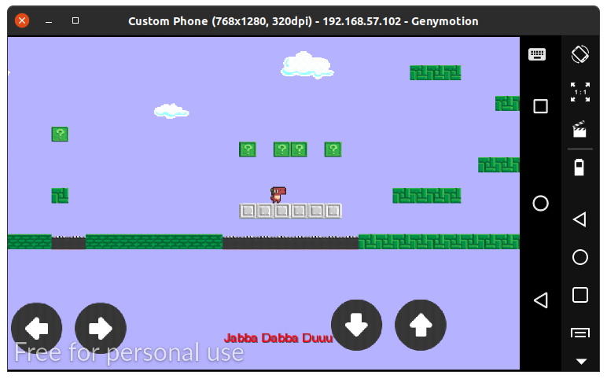
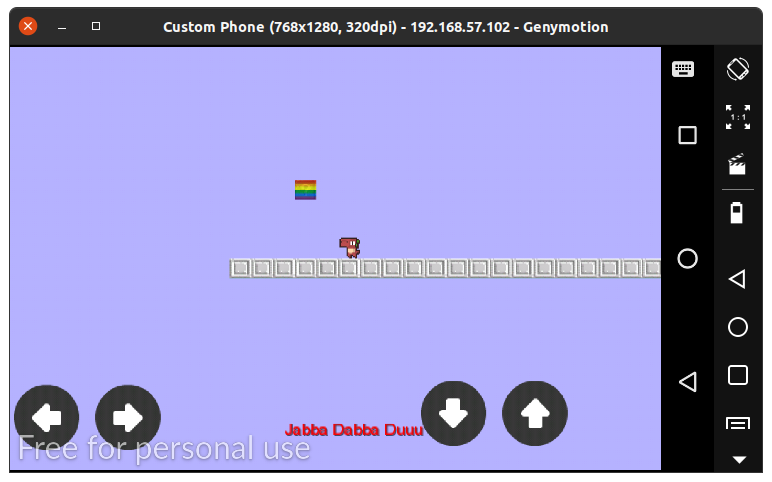
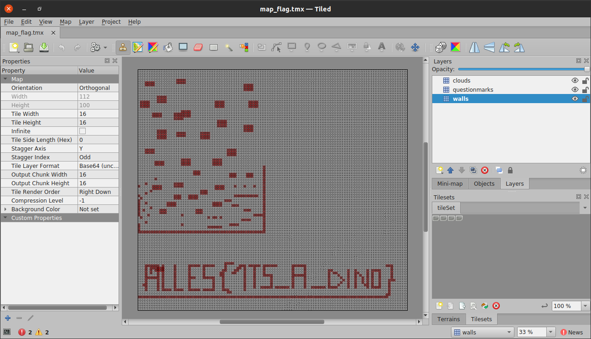

In this challenge we are given a file called prehistoric-mario.apk. To know what the app does, we can install it on our phone or emulator using:
$ adb install prehistoric-mario.apk

It is a platformer in which we walk around as a dinosaur and hit bricks to change their colours. I will not focus much towards the actual game as I solved this challenge outside of the game, however you can solve it by hitting the bricks in a certain order within the game as well.
We can decompile this Android app using jadx. After browsing through the source files for a while, we can see that the core game logic can be found in com.alles.platformer.MyPlatformer.java.
$ jadx prehistoric-mario.apk
$ cd prehistoric-mario/sources/com/alles/platformer
$ vi MyPlatformer.java
In this file, there are a few important methods:
In order to get to checkFlag() we need to satisfy a certain condition in updateKoala(). That is, if we hit a certain brick whose state is 1337, we execute the checkFlag() method. If it is not, then we just cycle the brick through the following states: 0, 21, 97 and 37. So whenever we hit a brick, it keeps changing colour in a four-colour cycle.
int intValue = ((Integer) cell2.getTile().getProperties().get("questionmarkType")).intValue();
if (intValue == 1337) {
new Array();
checkFlag();
} else {
if (intValue == 0) {
intValue = 21;
} else if (intValue == 21) {
intValue = 97;
} else if (intValue == 97) {
intValue = 37;
} else if (intValue == 37) {
-snip-

It turns out that 1337 is a special brick that we see when we jump across the wall and reach a hidden section below our world. However, we wish to solve this without playing the game, so moving on to the checkFlag() method.
private void checkFlag() {
MessageDigest messageDigest;
int intValue;
byte[] bArr = {0, 0, 0, 0, 0, 0, 0, 0, 0, 0, 0};
TiledMapTileLayer tiledMapTileLayer = (TiledMapTileLayer) this.map.getLayers().get("questionmarks");
int i = 0;
int i2 = 0;
while (i < 100) {
int i3 = i2;
for (int i4 = 0; i4 < 100; i4++) {
TiledMapTileLayer.Cell cell = tiledMapTileLayer.getCell(i, i4);
if (!(cell == null || !cell.getTile().getProperties().containsKey("questionmarkType") || (intValue = ((Integer) cell.getTile().getProperties().get("questionmarkType")).intValue()) == 1337)) {
bArr[i3] = (byte) intValue;
i3++;
}
}
i++;
i2 = i3;
}
-snip-
In the beginning of the method, we run a 100 * 100 loop going through each tile in our world. We check if the tile is a question mark type tile, and if it is, we store its state (0, 21, 97 or 37) in an array called bArr.
try {
messageDigest = MessageDigest.getInstance("SHA-256");
} catch (NoSuchAlgorithmException e) {
e.printStackTrace();
messageDigest = null;
}
messageDigest.update(bArr);
messageDigest.update("P4ssw0rdS4lt".getBytes());
if (toHex(messageDigest.digest()).equals("024800ace2ec394e6af68baa46e81dfbea93f0f6730610560c66ee9748d91420")) {
Once bArr is populated, we hash it along with the given salt, and check if it matches the solution state of bricks. So essentially, we need to find out the states of the bricks that make bArr emit this particular hash. Since we have just four states per brick, brute forcing is feasible (since we have 4^11 possible values for bArr).
import java.math.BigInteger;
import java.security.MessageDigest;
class brute {
public static void main(String args[]) {
byte[] p = {0,21,97,37};
for (byte i=0; i<=3; ++i) {
for (byte j=0; j<=3; ++j) {
for (byte k=0; k<=3; ++k) {
for (byte l=0; l<=3; ++l) {
for (byte m=0; m<=3; ++m) {
for (byte n=0; n<=3; ++n) {
for (byte o=0; o<=3; ++o) {
for (byte t=0; t<=3; ++t) {
for (byte q=0; q<=3; ++q) {
for (byte r=0; r<=3; ++r) {
for (byte s=0; s<=3; ++s) {
try {
MessageDigest messageDigest;
byte[] bArr = {p[i], p[j], p[k], p[l], p[m],
p[n], p[o], p[t], p[q], p[r], p[s]};
messageDigest = MessageDigest.getInstance("SHA-256");
messageDigest.update(bArr);
messageDigest.update("P4ssw0rdS4lt".getBytes());
if (toHex(messageDigest.digest()).equals("024800ace2ec394e6af68baa46e81dfbea93f0f6730610560c66ee9748d91420")) {
System.out.println(p[i] + " " + p[j] + " " + p[k] + " " + p[l] + " " + p[m] + " " + p[n] + " " + p[o] + " " + p[t] + " " + p[q] + " " + p[r] + " " + p[s] + " ");
System.exit(0);
}
} catch(Exception e) {};
}}}}}}}}}}}
}
public static String toHex(byte[] bArr) {
BigInteger bigInteger = new BigInteger(1, bArr);
return String.format("%0" + (bArr.length << 1) + "x", bigInteger);
}
}
Above, I've written a Java program to bruteforce the hash.
$ javac brute.java
$ java brute
21 0 97 37 21 37 37 97 97 37 21
Once we run the bruteforce program, we get the value of bArr. Now if we want, we can go around the game putting each brick in its corresponding state and get the flag. However, we can also reverse the rest of the method and see what it does.
-snip-
if (toHex(messageDigest.digest()).equals("024800ace2ec394e6af68baa46e81dfbea93f0f6730610560c66ee9748d91420")) {
try {
messageDigest.update(bArr);
messageDigest.update("P4ssw0rdS4lt".getBytes());
messageDigest.update(bArr);
byte[] digest = messageDigest.digest();
byte[] decode = Base64Coder.decode(Gdx.files.internal("flag_enc").readString());
SecretKeySpec secretKeySpec = new SecretKeySpec(digest, 0, digest.length, "RC4");
Cipher instance = Cipher.getInstance("RC4");
instance.init(2, secretKeySpec, instance.getParameters());
String str = new String(instance.doFinal(decode));
FileHandle local = Gdx.files.local("map_flag.tmx");
local.writeString(str, false);
Gdx.files.local("tileSet.png").writeBytes(Base64Coder.decode(/* a very long string */), false);
TmxMapLoader tmxMapLoader = new TmxMapLoader(new LocalFileResolver());
tmxMapLoader.getDependencies(BuildConfig.FLAVOR, local, (BaseTmxMapLoader.Parameters) null);
AssetManager assetManager = new AssetManager(new LocalFileResolver());
assetManager.load("tileSet.png", Texture.class);
assetManager.finishLoading();
tmxMapLoader.loadAsync(assetManager, "map_flag.tmx", local, (TmxMapLoader.Parameters) null);
this.map.dispose();
this.map = tmxMapLoader.loadSync((AssetManager) null, (String) null, (FileHandle) null, (TmxMapLoader.Parameters) null);
this.renderer = new OrthogonalTiledMapRenderer(this.map, 0.0625f);
} catch (Exception e2) {
e2.printStackTrace();
}
}
Once we get the hash, we base64 decode the contents of an internal file called flag_enc. After decoding, we also need to decrypt the file using bArr that we calculated earlier. Once the file is decrypted, we can see that it is written to map_flag.tmx and loaded into the world. So I wrote a script by mostly copying the decompiled code and got the decrypted map file that will be shown to us if we succeed within the game.
import java.security.MessageDigest;
import java.math.BigInteger;
import javax.crypto.Cipher;
import javax.crypto.spec.SecretKeySpec;
import java.util.Base64;
import java.nio.file.Files;
import java.nio.file.Path;
import java.nio.file.Paths;
class idk {
public static void main(String args[]) {
try {
byte[] bArr = {21, 0, 97, 37, 21, 37, 37, 97, 97, 37, 21};
MessageDigest messageDigest;
messageDigest = MessageDigest.getInstance("SHA-256");
messageDigest.update(bArr);
messageDigest.update("P4ssw0rdS4lt".getBytes());
if (toHex(messageDigest.digest()).equals("024800ace2ec394e6af68baa46e81dfbea93f0f6730610560c66ee9748d91420"))
{
messageDigest.update(bArr);
messageDigest.update("P4ssw0rdS4lt".getBytes());
messageDigest.update(bArr);
byte[] digest = messageDigest.digest();
Path filePath = Paths.get("flag_enc");
String content = Files.readString(filePath);
byte[] decoded = Base64.getDecoder().decode(content);
SecretKeySpec secretKeySpec = new SecretKeySpec(digest, 0, digest.length, "RC4");
Cipher instance = Cipher.getInstance("RC4");
instance.init(2, secretKeySpec, instance.getParameters());
String str = new String(instance.doFinal(decoded));
System.out.println(str);
}
} catch(Exception e) {};
}
public static String toHex(byte[] bArr) {
BigInteger bigInteger = new BigInteger(1, bArr);
return String.format("%0" + (bArr.length << 1) + "x", bigInteger);
}
}
The above code will stream the decoded map file into stdout so we can capture it as follows.
$ javac idk.java
$ java idk > map_flag.tmx
Once we have the tmx file, we can open it using Tiled.
Flag: ALLES{1TS_A_DINO}